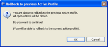
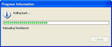
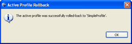

Rolling Back

To roll back to a previous profile:
- Select the Roll back to the previous active profile link (#2 in the image above). The Rollback to previous Active Profile dialog box displays.

- Click OK to continue or click Cancel to return to the Profile Perspective. The Progress Information dialog box appears showing the progress of the rollback action.

- When complete, the Active Profile Rollback dialog box displays. Click OK.

Related Topics
Profile Perspectives
The General Tab
The Annotation Tab
The Primitive-Type Tab
The Artifacts Tab
Deploying your Profile
Project Profiles
Loading Factory Defaults
 Loading Factory Defaults
Loading Factory Defaults
© copyright 2005, 2006, 2007 Cisco Systems, Inc. - All rights reserved